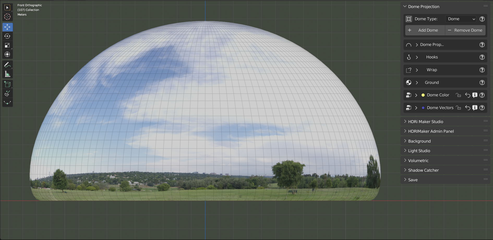
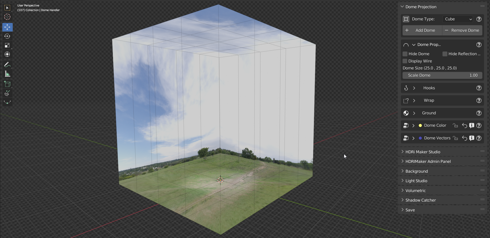
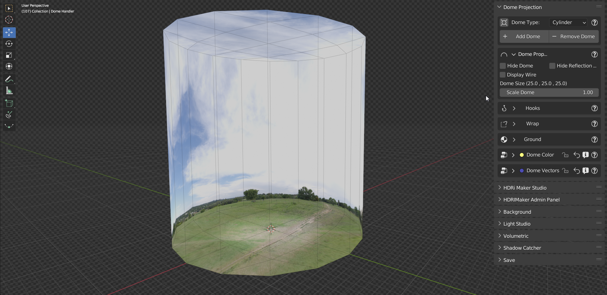
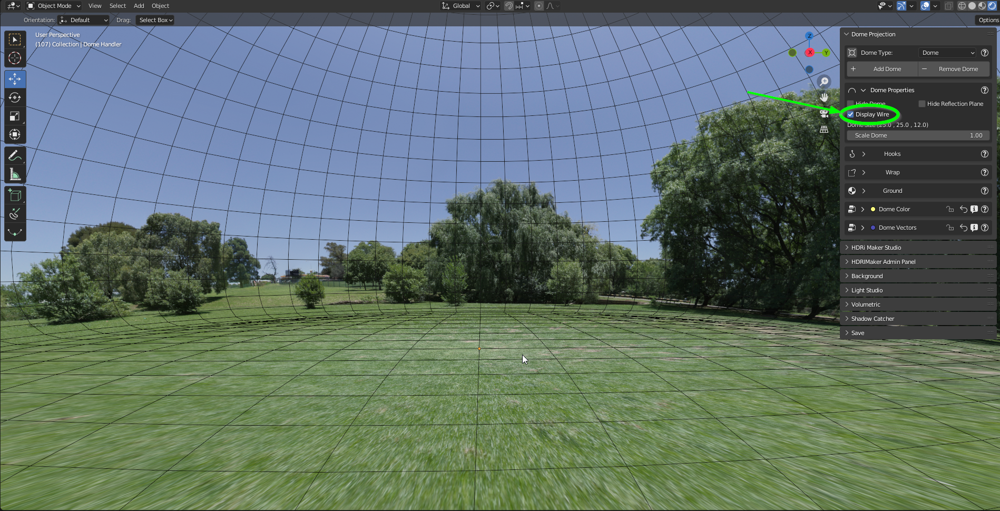
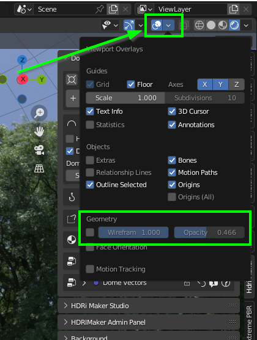
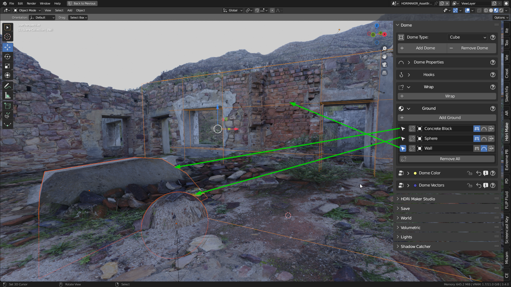
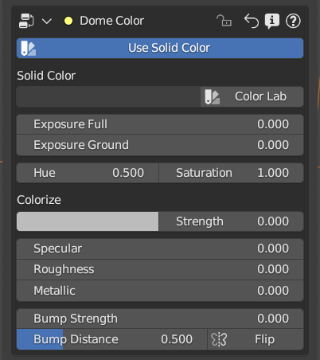
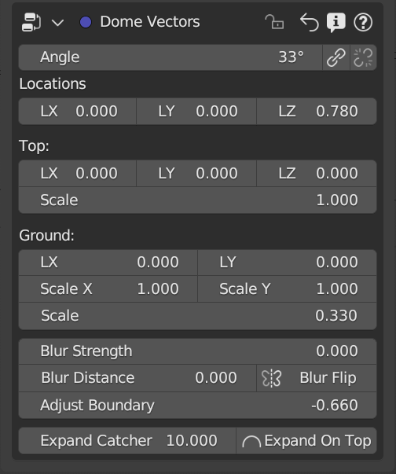

Dome
Introduction:
The projection of an HDR/EXR or other formats on a dome is a great formula to work in a photo-realistic environment. At the same time the classic way of working with “non-projected” backgrounds is very used, but this usually has big limitations (No zoom, no ground, etc.) So the dome Projection is a powerful function because it projects the image on a dome “Really existing” with terrain. The terrain can also be made irregular through the features included in this menu. In addition there are various types of dome, including the newest “Cube” dome that allows you to be modified through the hook!
Welcome to the Dome Projection Menu!
The Dome Projection menu is presented as you see in this image, it’s composed of 7 submenus, which we will see more down

Choose/Add/Remove Dome:
The first thing to do is to choose the dome you want to work with. Remember, the dome is a “real” object into your scene! So, before adding a dome, make sure you have added a background through the “Add” button from the main HDRi Maker panel, or you can also import one from your HDR/EXR background gallery (Even if it is not good practice, it will also accept PNG, JPG, BMP, and all image formats accepted by blender)
{kind=link}
Add Dome
Before continuing, make sure you have added a background through the “Add” button from the HDRi Maker main panel.
Choose a dome from the N4 property (Shown in the previous image) and click on “Add Dome” to add it to the scene. This button, in addition to adding a new dome, also has the function of replacing the one already present in the scene (if present) with the one chosen.
Note
The dome needs an image to load inside it, at the moment it only works if the scene has a background with an image inside it. It doesn’t matter what image, it will understand it by itself, through the node tree of the World material, which image to load inside the dome. If the world background is not of type HDRi Maker, it doesn’t matter, the first Environment image found inside the World will be taken.
In short, if there are more than 1 Environment image in the world shader, the first one found will be taken and used for the dome.
Remove Dome
The “Remove” button, simply removes the dome present in the scene and nothing more
Center View on Dome
This small button, serves to center the view at the center of the dome (We found it very useful in many situations)
Dome Type
Note
To change the dome, press the “Add Dome” button (see above)
This is the interesting part, here you can choose the type of Dome you want to use, currently there are 3 types of Dome, namely:
# Dome (Shape)
Classic Dome, This dome is interesting and is the most classic of domes, It has a grid on the ground that allows to do the Wrap (Explained later here: Dome Wrap) It can be scaled, and thanks to the HDRi Maker node system, the projection can be set, scaling the mapping of the ground, in order to have a larger or smaller ground, or smaller, depending on your needs. It is also possible to modify the mapping of the sky part, in order to be able to set the projection as best as possible. ..TODO: link to the Hook System
All this is explained better in the “Dome Projection Vector” section ..TODO

{kind=link}
# Cube (Shape)
This is the new dome from version 3.0.100, it is a cube that can be modified through the hook, in order to have a more irregular shape. It is also possible to modify the mapping of the sky part, in order to be able to set the projection as best as possible.

{kind=link}
# Cylinder (Shape)
This is the new dome from version 3.0.100, it is a cylinder that can be modified through the hook, in order to have a more irregular shape. It is also possible to modify the mapping of the sky part, in order to be able to set the projection as best as possible.

{kind=link}
Note
All domes have a grid on the ground that can be modified through custom objects (Wrap) Here Dome Wrap, this allows you to create much more realistic grounds, and with much more complex deformations. In the following chapters the interface of the Wrap is explained.
Dome Properties
The Submenu “Dome Properties” is designed to modify some properties of the dome:
{kind=link}
Hide Dome:
Hides the dome, in order to work better (If necessary), this allows you to keep all the settings chosen, so when you want to work with the dome again, just click on this button again to make it reappear.
Hide Reflection Plane
The dome by default, has a reflection plane applied to its ground, this allows you to have realistic reflections on the ground (If necessary) the reflection plane is only necessary when using Eevee Render, if you use Cycles Render it is possible to disable it, so as not to display it.
The 3d model (Mei Posed 001 - Female Walking Business Model) is licensed CC Attribution, comes from sketchfab, and was made by “Renderpeople” the link here: https://sketchfab.com/3d-model
Note
The reflection plane follows the scale of the dome, it will always be the right size to adapt to the size of the ground of the dome. (If Hooks are used, the reflection plane will also follow the changes made with Hooks) ..TODO
Display Wire
This option allows you to display the wireframe of the dome, This could be useful to understand the real mesh of the dome, and to understand how the Wrap behaves (Explained later here Dome Wrap) It is also very useful to adjust the vectors of the mapping of the dome material, especially during the use of the dome Cube or Cylinder.
Note
To change the intensity of the wire, refer to the native Blender menu “Viewport Overlays” here below the image:
Example of wireframe settings modification
Scale Dome
Scale dome, serves to scale the dome in size. If you have applied the Wrap (Explained later here: Dome Wrap) then the wrap will scale with the dome, so as to always keep the same proportional size to the dome. If you are using the “Ground” Material (Explained later here) ..TODO then the objects to which you have applied the “Ground” material will scale with the dome, so as to always keep the same proportional size to the dome.
Note
Light studio is not scaled with the dome at the moment
Dome Hooks
{kind=link}
See also
Here you can see a video tutorial on how to use the hooks: Custom Dome with Hooks
Keep aspect ratio
560 to 650 315 to 360
Dome Hooks is a feature introduced in version 3.0.100, It allows you to apply 25 Hooks to the dome plane, they allow you to modify the shape of the dome perimeter, in order to adapt it as best as possible according to the HDR scene in which you are. This allows you to make the scene in the dome even more realistic than before Here below an example image:
In this image we see a dome of type “Cube”, Hooks have been used to modify the shape of the dome perimeter, This makes everything look much more realistic and aligned to the geometries of the HDR image
In this image we see the same scene from a different angle, with the Hooks that work on the meshes of the dome, They have been positioned as best as possible to adapt to the proposed image
Add/Remove Hooks
This button allows you to add or remove hooks, it is possible to add up to 25 hooks, and to remove them all at once. The hooks are applied to the dome plane, and are used to modify the shape of the dome perimeter, in order to adapt it as best as possible according to the HDR scene in which you are. This allows you to make the scene in the dome even more realistic than before.
Note
The Hooks currently work only with domes of type “Cube” and “Cylinder”
Hide Hooks
This checkbox allows you to hide the hooks, in order to work better (If necessary), this allows you to keep the hooks in place, so when you want to work with the hooks again, just click on this button again to make them reappear.
Hook Size
This slider allows you to modify the size of the hooks, in order to make more confortable the work with the hooks. Big Hooks = More visible = More confortable to work with (If necessary)
Expand Hooks
This slider allows you to do a kind of scale on the distance between the Hooks, in this way it is possible to expand or contract the distance of the hooks from the center of the dome (Uniformly). This differs from the slider “Dome Size” Since the projection of the image on the dome, does not adapt as in the case of the dome size, on the contrary, it allows you to adapt the geometry to the projected image as best as possible.
Hooks Type
This dropdown menu allows you to choose the type of hooks to use. They will be changed simultaneously once chosen in the dropdown menu
Dome Wrap
Dome Wrap is a very powerful tool that uses Blender modifiers to create real displacement in the mesh of the ground of the dome (All types of dome present in HDRi Maker support the wrap).
{kind=link}
Note
Once the wrap has been added to an object, if you intend to scale the dome, no problem, the wraped object(s) will scale with the dome, so as to always keep the same proportional size to the dome.
In this example the wrap has been applied to various objects generated with “A.N.T. Landscape” an addon already present in Blender
Here we have the same scene as before, with wireframe active, we can also see some “boxes” they are actually Landscapes generated with the “A.N.T. Landscape” addon and that have been applied to the dome ground as Wrap objects
Tip
I Suggest to activate the addon already present in Blender “A.N.T. Landscape”, From Blender:
Go to the “Edit” menu
Select “Preferences”
Select the “Addons” tab
Search for “A.N.T. Landscape”
Activate the addon
Edit -> Preferences -> Addons -> Search “A.N.T. Landscape” -> Activate
{kind=link}
Wrap Button
Before pressing Wrap, make sure you have a Mesh type object selected (An object created with A.N.T. Landscape is perfect for this purpose) You can also have more objects selected and press Wrap, in this case all the selected objects will become Wrap objects, and will be visible in the list (See in the next point 2) Now the ground of the dome is able to adapt to the shape of these objects, in this way it is possible to create much more realistic and detailed scenes.
Wrap Objects List
This list shows all the objects that have been applied as Wrap objects, in this way it is possible to remove them from the list, or to modify their settings (Only the wrap objects will be in this list) The arrows on the left are used to select the wrap object in the scene
Remove Wrap Object
This button removes the wrap from the object in the list, so the object will return to the previous state to the Wrap.
Wrap Object Name
This text field shows the name of the object in the list, it is possible to change the name of the object in the list on the fly
Negative / Positive Wrap
These two arrows (Up and down) allow you to decide in which vertical direction you want the wrap to be applied Use Cases:
If the Wrap is Negative, the dome ground will adapt to the shape of the object only if the object is lower than the ground
If the Wrap is Positive, the dome ground will adapt to the shape of the object only if the object is higher than the ground
If both Wraps are active, the dome ground will adapt to the shape of the object in both directions
Image Example:
In this example there are 3 wrap objects, all the same but with different orientation options
1. is an object with negative Wrap
2. is an object with positive Wrap
3. is an object with negative and positive Wrap
{kind=link}
Toggle Object Visibility
This button allows you to hide the object in the scene, in this way it is possible to work better with the object without having to remove it from the list
This button allows you to switch between the visibility of the object in the scene and the visibility of the wrap object in the list:
If active, the object will be visible in the form of an Invisible Box, only the edges of the box will be visible (But not in the final render)
If disabled, the object will be visible as normal
Unwrap All
This button allows you to unwrap all the objects in the list in one click
Subdivision Level
This slider allows you to modify the subdivision level of the dome ground, This allows you to have greater accuracy in the Wrap, but also increases the rendering time. The minimum value is 0 (So base grid), the maximum value is 6 (The value is breakable, but it is not recommended to go beyond 6 because it could freeze Blender)
Smooth Factor
This slider allows you to modify the smooth factor of the dome ground, This works in symbiosis with “Smooth Iterations” (Next point), if Smooth Factor is 0, even smooth iterations will not work
Smooth Iterations
This slider allows you to modify the smooth iterations of the dome ground, This works in symbiosis with “Smooth Factor” (Previous point), if Smooth Factor is 0, even smooth iterations will not work. This “Spreads” the smooth better, making it more expanded and more homogeneous.
Ground Material
The Ground Material is exactly the material of which the dome is composed, this material is very important, and can be used on objects other than the dome, the most important feature is that this material is mapped on the center of the dome, so wherever you move the object on which you apply this material, it will always adapt and match the position of the dome ground. In short, it will always match the position of the image of the ground. From version 3.0.100 it is also possible to use it as a material that matches the top part of the dome, This is useful in some cases if you want to add some extra detail to the dome. More Aventi will be shown some examples.
This “Warrior Fauno” was downloaded from sketchfab, and was created by “Yamato” CC Attribution license. Link Here: https://sketchfab.com/3d-models/warrior-fauno-007eae3f0d934aedb32f910e941bcca9
This is an example with 3 objects to which the ground material of the Dome has been applied:

This function allows you to make the dome even more detailed if you want. You can apply the material also to custom walls. As in the image example below, above in which the wall is detailed with extrusions at the height of the doors and windows of the ruin.
{kind=link}
{kind=link}
Dome Color (Node Group)
{kind=link}
Use Solid Color (Button)
If on, it will use a solid color instead of the image. The color property will appear once activated.
Solid Color (Rgba)
Adjust solid color. (Make sure the Colorize Strength is set to 0 to get a correct solid color).
Exposure Full (Value)
It adjusts the exposure of the entire dome, both the ground and the sky, and also acts as an illuminator
Exposure Ground (Value)
It adjusts the exposure of the ground only.
Hue (Value)
Adjust the HUE on the whole dome
Saturation (Value)
Adjust the Saturation on the whole dome
Colorize (Rgba)
Color to colorize. (Needs to raise the Strength property to be visible)
Strength (Value)
Adjusts the strength of the colorize
Specular (Value)
Adjust the ground reflection. (The ground is reflective in the center and towards the edges it is blended with a gradient, in order to render only the ground without affecting the vertical part of the dome)
Roughness (Value)
Adjust the ground Roughness. (The ground is reflective in the center and towards the edges it is blended with a gradient, in order to render only the ground without affecting the vertical part of the dome)
Metallic (Value)
Adjust the ground Metal effect. (The ground is reflective in the center and towards the edges it is blended with a gradient, in order to render only the ground without affecting the vertical part of the dome)
Bump Strength (Value)
Adjust the bump strength, the bump map is simulated by the main image, which changes from Colors to black and white. It only affects the Ground
Bump Distance (Value)
Adjust the bump distance, the bump map is simulated by the main image, which changes from Colors to black and white. It only affects the Ground
Flip (Button)
Flip the Bump Direction
Dome Vectors (Node Group)
{kind=link}
Angle (Value)
Rotate the image completely on the Z axis
You can also Sync the angle of the rotation with the world rotation of the dome, in this way the image will rotate with the dome.
Locations
LX (Value)
(Location X) Move the image completely on the X axis
LY (Value)
(Location Y) Move the image completely on the Y axis
LZ (Value)
(Location Z) Move the image completely on the Z axis
Top:
LX (Value)
Move the top of the image on the X axis
LY (Value)
Move the top of the image on the Y axis
LZ (Value)
Move the top of the image on the Z axis
Scale (Value)
distanceScale only the top of the Dome. The ground will not be scaled
Ground:
LX (Value)
Move the image projected onto the ground on the X axis
LY (Value)
Move the image projected onto the ground on the Y axis
Scale X (Value)
Scale image projected on the ground on the X axis
Scale Y (Value)
Scale image projected on the ground on the Y axis
Scale (Value)
Scale image projected on the ground uniformly
Blur Strength (Value)
Set the hardness of the Blurry effect
Blur Distance (Value)
Set the distance from which the Blurry effect is to be seen
Blur Flip (Button)
Invert the blurry effect. The blurry part will become the non-blurry part etc.
Adjust Boundary (Value)
Adjust the part of the image where it meets the ground. Useful in some cases, when changing the scale and position properties, especially on the ground.
Expand Catcher Plane (Value)
The Catcher Plane is the plane of the dome on which the shadow and all the effects (Specular-Roughness-Bump etc.) can be projected. The more it expands, the wider the action plane will be.
Expand On Top (Button)
Expand The Catcher even beyond the floor to the entire top